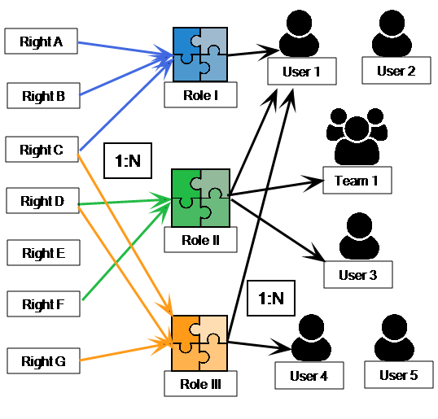
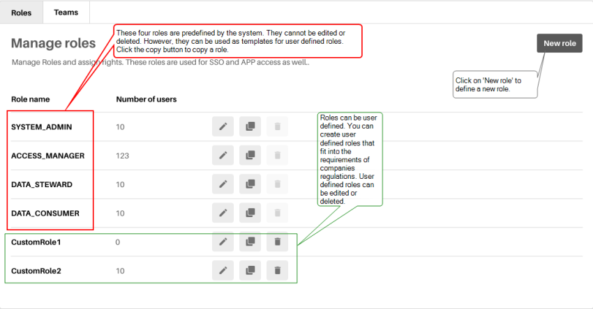
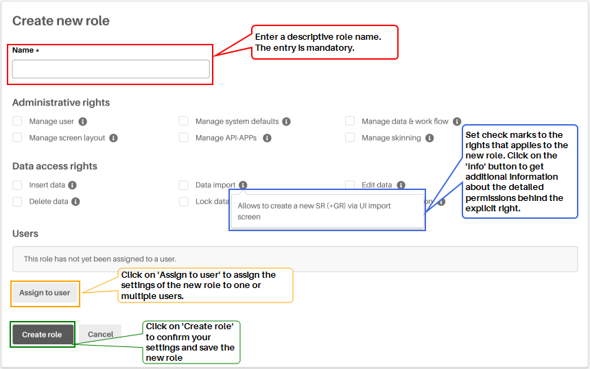
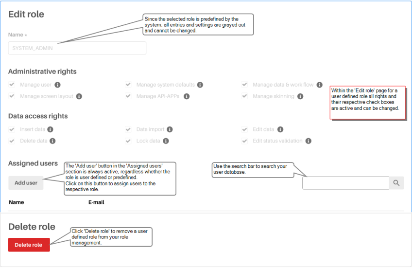
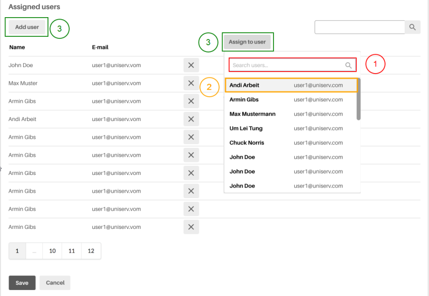

The CDH2 rights & roles concept
Rights & Roles
The rights & roles concept for the management of permissions of actions for users and teams is based on the assignment of a role to a user.
It is a basic principle that rights cannot be assigned directly to a user. Instead, user roles are defined for each application. These roles are equipped with the necessary rights. The assignment of rights to a user is done indirectly, i.e. by assigning him or her the corresponding role.
The rights assigned through a role allow a user to perform particular actions on a determined CDH2 resource. A resource, in turn, can be available to multiple roles.
The individual components of rights & roles management allow you to tailor your users access rights along with the respective requirements of your organization.

The rights and roles management
The CDH2 rights and roles management provides a number of predefined roles that are installed along with CDH2. These roles can be assigned to all users who log in to the system. The predefined roles are:
- SYSTEM_ADMIN
- ACCESS_MANAGER
- DATA_STEWARD
- DATA_CONSUMER
They can be used for SSO as well as for APP access. More and above these predefined roles, it is possible to define your own roles sufficing specific customer needs. The set of possible rights can be distinguished in three types:
- Rights on Records to view, edit, export, insert, delete
- Rights to Administrate App/Flows
- Rights to Access Certain Pages
|
Access rights: |
These rights are prerequisites to get access to the relevant modules of CDH2 system. Those access rights shall cover:
|
|
Administrative rights: |
These rights are necessary for the administration of the CDH2 system. Typical administrative rights are:
|
|
Data rights: |
These rights are important in the field of data management. Typical data access rights are:
|
To manage your roles, assigning them to users or defining new ones click on 'Rights, Roles, Teams' in the side navigation menu in the 'Administration' section. The 'Manage roles' page will be opened. The 'Manage roles' view will provide you with two tabs. The 'Roles' tab and the 'Teams' tab. Click on the roles tab to continue with the roles management.
For further information see the subsequently listed instructions:
The 'Manage roles' tab provides you with an overview list of all available roles. You can modify, copy and delete roles by clicking on the respective buttons at the end of each table row.
Please take notice, that the top four roles are predefined by the system. Therefore the cannot be edited or deleted.
The following options are available on this page:
Click on 'New role' to open the 'Create new role' page.
Click on the 'Edit' button at the end of a table row. The 'Edit role' page will be opened. Here you can modify the settings for an existing role.
Click on the 'Copy' button next to the 'Edit' button. The 'Create new role' page will be opened. By clicking 'Copy' you can use the existing role as a template for a new role. The settings of the original role definition will be copied to the new role definition.
Click on the 'Delete' button to delete a role. Be aware that users will not have any access to the system anymore, as soon as their role is deleted.

|
Role name |
The names of the roles are displayed here. The system defined roles as well as the user defined. |
|
Number of users |
This column shows number of users per roles. Be aware that the sum of all numbers per role is probably bigger then the total number of your users. This is because of the possibility that multiple roles can be assigned to a single user. |
On the 'Create new role' page you can define new roles by your own. Select the rights you want to apply from the 'Adminstrative rights' section or from the 'Data access rights' section.
You can enable or disable rights for the respective role by selecting or deselecting the attached check boxes.
All users to whom a role has been assigned are displayed in the input line in the 'Users' section. You can assign a role to multiple users by clicking on 'Assign to user'.
Click on 'Create role' to confirm your settings and entries and save the new role.
Click on 'Cancel' to abort.

On the 'Edit role' page you can change the settings and entries of an existing role. Select the applicable rights you want to change from the 'Adminstrative rights' section or from the 'Data access rights' section. If you selected a predefined role you are not allowed to change the settings and entries. Therefore the role name and the applicable rights are grayed out on this page. All you can change is the list of the assigned users.
Enable or disable rights for the respective role by selecting or deselecting the attached check boxes. This option is not available for predefined roles.
A table with all users to whom the current role is assigned to is displayed in the 'Assigned users' section. For more information see also: How to assign a role to a user?
To remove a user defined role from the rights & roles management, click on the red 'Delete role' button in the 'Delete role' section

You can assign a role to user either while creating a new role or by adding users to an existing one. For both ways you have to do the following:
- Enter a name or an email address resp. parts of both in the search line. Depending on the string you entered a pick list is displayed, that is automatically completed.
- Select a user from that pick list by clicking on it.
- Click on 'Assign to user' to assign the current role to the chosen user. This option is only available when you are creating a new role.
- Click on 'Add user' to add a user to the list of assigned users. The new user will appear on the list of assigned users and is automatically equipped with the current role. This option is only available when you are editing an existing role. The list with the assigned users is displayed in the 'Assigned users' section.
You can remove users from the 'Assigned users' list by clicking the 'Delete' button at the end of each line.
Within the 'Assigned users' section only ten lines of the entire list are displayed. This depends - of course - on the number of your assigned users. To watch lists that extends over more then ten lines, click on the page buttons underneath the list.
Click on 'Save' to save all changes.
Click 'Cancel' to abort.
